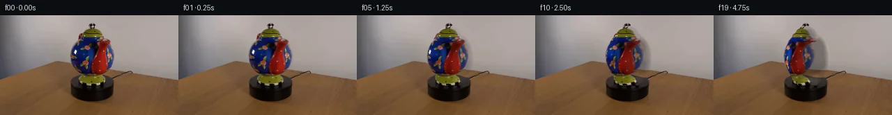

![首帧]()

Round 00
2026-11-05T09:43:59.737669+00:00像素候选变化代码 +172/−0inspection 更新
pixels cb7a0e027fef7641 · code fa131605934e3d91
查看本轮 generate.py 真实 diff
--- previous/generate.py +++ current/generate.py @@ -0,0 +1,172 @@ +#!/usr/bin/env python3 +"""Generate a 20-frame, fixed-camera clockwise teapot rotation. + +The only visual source is first_frame.png. Rotation is represented by an +analytic cylindrical inverse warp of the pixels already on the teapot. The +surrounding scene and the turntable are never resynthesized or moved. +""" + +from pathlib import Path + +import cv2 +import numpy as np +from PIL import Image, ImageDraw + +import artifact_io + + +ROOT = Path(__file__).resolve().parent +W, H = 256, 144 +N_FRAMES = 20 +DEGREES_PER_FRAME = 2.25 + + +def interpolated_edges(y_grid, knots): + """Return sub-pixel left/right silhouette guides for every image row.""" + ky = np.asarray([p[0] for p in knots], np.float32) + left = np.asarray([p[1] for p in knots], np.float32) + right = np.asarray([p[2] for p in knots], np.float32) + return np.interp(y_grid, ky, left), np.interp(y_grid, ky, right) + + +def smoothstep(a, b, x): + q = np.clip((x - a) / (b - a), 0.0, 1.0) + return q * q * (3.0 - 2.0 * q) + + +def cylindrical_layer(source, theta, knots, y_min, y_max, phase_scale=1.0): + """Warp one rotational layer and return warped RGB plus a feather mask.""" + yy, xx = np.mgrid[0:H, 0:W].astype(np.float32) + left, right = interpolated_edges(np.arange(H, dtype=np.float32), knots) + left2 = left[:, None] + right2 = right[:, None] + center = (left2 + right2) * 0.5 + radius = np.maximum((right2 - left2) * 0.5, 1.0) + + # Orthographic projection of a cylindrical surface. Inverse mapping + # means positive theta makes visible decoration travel toward screen-left, + # the image-space cue for the requested clockwise yaw. + u = np.clip((xx - center) / radius, -0.9995, 0.9995) + longitude = np.arcsin(u) + source_u = np.sin(longitude + theta * phase_scale) + map_x = center + radius * source_u + + # Keep rows stable. A very small curvature-dependent vertical term makes + # the glossy round body read as volume rather than as a sliding rectangle. + bulge = (1.0 - u * u) * np.sin(theta * phase_scale) + map_y = yy + 0.22 * bulge + + warped = cv2.remap( + source, + map_x.astype(np.float32), + map_y.astype(np.float32), + interpolation=cv2.INTER_LINEAR, + borderMode=cv2.BORDER_REFLECT_101, + ) + + # Preserve broad stationary illumination while allowing painted details to + # rotate. This avoids making the upper-left studio highlight orbit with + # the ceramic surface. + src_luma = cv2.cvtColor(source.astype(np.uint8), cv2.COLOR_RGB2GRAY).astype(np.float32) + warp_luma = cv2.cvtColor(np.clip(warped, 0, 255).astype(np.uint8), cv2.COLOR_RGB2GRAY).astype(np.float32) + fixed_light = cv2.GaussianBlur(src_luma, (0, 0), 5.2) + moving_light = cv2.GaussianBlur(warp_luma, (0, 0), 5.2) + correction = np.clip((fixed_light + 8.0) / (moving_light + 8.0), 0.68, 1.45) + warped = np.clip(warped * correction[..., None], 0.0, 255.0) + + # A narrow untouched rim retains the exact silhouette and anti-aliasing. + edge_distance = np.minimum(xx - left2, right2 - xx) + alpha_x = smoothstep(0.7, 3.2, edge_distance) + alpha_y = smoothstep(y_min - 0.2, y_min + 2.1, yy) * (1.0 - smoothstep(y_max - 2.1, y_max + 0.2, yy)) + alpha = np.clip(alpha_x * alpha_y, 0.0, 1.0) + return warped, alpha + + +def make_frame(source, angle_degrees): + if angle_degrees == 0.0: + return source.astype(np.uint8).copy() … diff truncated; 85 more lines …